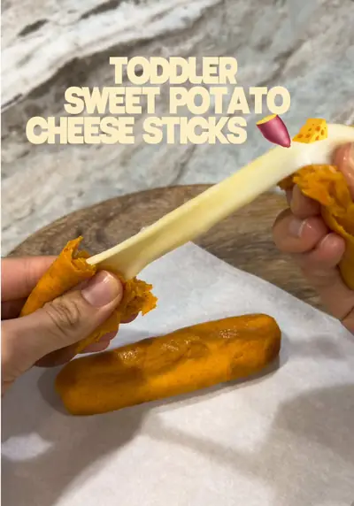

Toddler Sweet Potato Cheese Sticks

Ingredients
- 1 medium sweet potato, steamed
- 2 tbsp flour
- 2 cheese sticks
- Olive oil, butter, or egg wash
Steps
- Peel & steam sweet potato until fork tender.
- Mash and mix in flour until a dough forms.
- Divide into 2 balls and flatten.
- Place a cheese stick in the center and seal the edges.
- Brush with olive oil, butter, or egg wash.
- Air fry at 350°F for 10–15 minutes, flipping halfway.
- If cheese leaks out, just push it back in after cooking.
- Let cool before serving.
Recipe text as written by @busymamaeasybites on TikTok. Open original